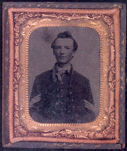

|

NAME: William Thomas Morgans
BORN: 1844
DIED: 1882
ALLEGIANCE: Union
HIGHEST RANK: Brevet captain
UNIT: 143rd New York Volunteer Infantry, Companies F, G, and H
RECORD: Mustered in October 8, 1862, at Monticello,
New York. Served in the defenses of Washington until April
1863. Participated in the defense of Suffolk, Virginia, in
1863, and the Atlanta, Savannah, and Carolina campaigns in
1864. Promoted to first sergeant July 1864 and sergeant
major September 1864. Promoted to first lieutenant April
1865 and mustered out as brevet captain in July 186S.
|
|
Fortune seemed to smile upon William Thomas Morgans from a
young age. Born in Bethel, New York, in 1844, by the time
Morgans turned 15 the gifted youth could take apart, repair,
and reassemble a watch. He also learned to speak, read, and
write fluently in French and German. In October 1862, at the
age of 18, Morgans enlisted in the newly recruited 143rd New
York Volunteer Infantry.
Morgans proved to be one of fortune's favorites during his
army career, too. He was chosen to drill the new recruits,
and in short order was made color sergeant, proudly bearing
the colors through the Atlanta Campaign in 1864 at the
battles of Resaca, Culp's Farm, Peach Tree Creek, and the
siege of Atlanta. During the campaign, he was promoted to
first sergeant and then sergeant major.
The young Morgans seemed to be immortal. His fellow soldiers
liked to recount a daring deed he and Adjutant Rensselaer
Hammond performed during the Battle of Bentonville, North
Carolina, in March 1865. The regiment had been ordered to
advance when word came that the men were out of ammunition.
The troops were separated from their supply wagons by an
open field that was subject to fierce enemy fire. Bullets
filled the air, and it seemed certain death to attempt to
cross the field. Undaunted, Morgans and Hammond volunteered
to make the dash. With bullets whizzing around their heads,
they crossed the field to the supply wagons and returned,
each carrying a 156-pound box of cartridges. Fortune had
never smiled so brightly on one of her own.
Morgans was promoted to first lieutenant of Company H in
April 1865, and marched in the Grand Review of the Armies
that May. During the parade, an old woman hailed Morgans,
asking, "Bub, did you go all through the war?" Morgans
replied, "Well, reckon I did!"
Before mustering out in July 1865, Morgans was brevetted
captain and given command of Company H. After the war, his
early mechanical proclivities came to the fore; he invented
the Hercules printing press and established the Morgans and
Wilcox Manufacturing Company with H. K. Wilcox in
Middletown, New York.
Fortune's favor was not to last, however. In 1882, Morgans
contracted pneumonia and died at the age of 38, leaving
behind a wife and eight children. The Rockland, New York,
post of the Grand Army of the Republic bears the name Post
Morgans in his honor.
Source: Civil War Times Illustrated
40:7 (February 2002), 72.
|